01 / PERSONAL PROFILE
个人简介
我是余晨琛，本科就读于中南大学建筑与艺术学院环境设计专业。本科阶段的学习让我建立了对空间、尺度、路径与人的行为关系的基本理解，而我真正持续关注的问题，是空间如何成为表达思想、故事与情感的媒介。
从空间设计、文化展示到场景构建与数字媒介，我逐渐意识到：我感兴趣的并不是某一种固定的设计形式，而是人、叙事与空间体验之间的关系。
LIFE CONTINUE TO GROW
MOVE CURSOR TO DISTURB THE WORDS
移动鼠标，拨动生长中的文字
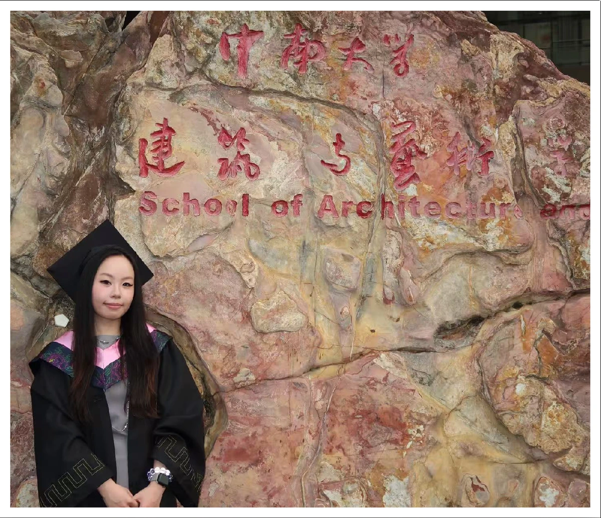
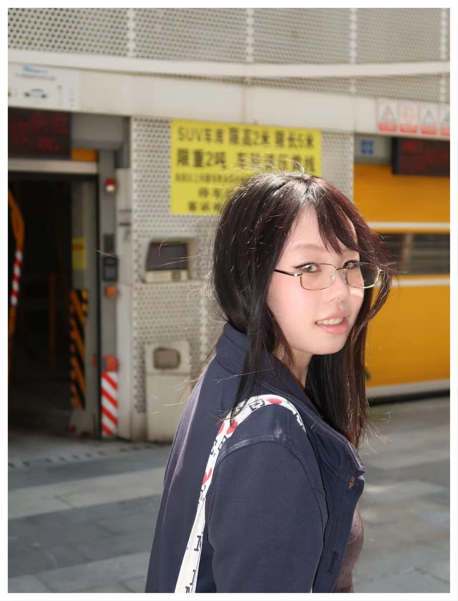
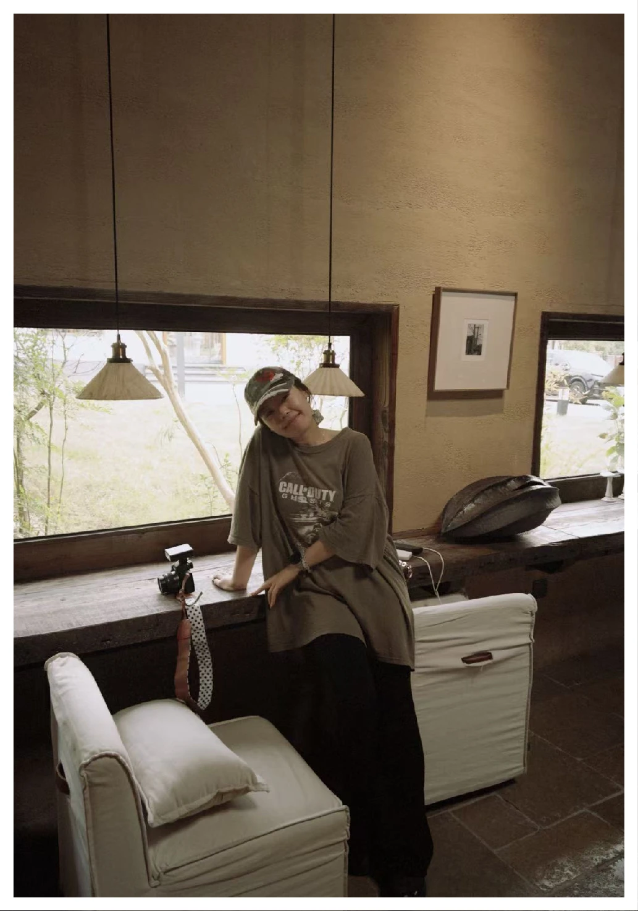
我是余晨琛，本科就读于中南大学建筑与艺术学院环境设计专业。本科阶段的学习让我建立了对空间、尺度、路径与人的行为关系的基本理解，而我真正持续关注的问题，是空间如何成为表达思想、故事与情感的媒介。
从空间设计、文化展示到场景构建与数字媒介，我逐渐意识到：我感兴趣的并不是某一种固定的设计形式，而是人、叙事与空间体验之间的关系。
在不断进行空间实践的过程中，我开始关注数字技术对空间边界的改变。AR、VR、XR、实时渲染与生成式 AI，使空间不再只是固定的三维容器，观众也可以进入、参与甚至改变叙事。
因此，我希望将已有的空间构建能力继续向游戏场景、虚拟舞台、虚拟电影场景与沉浸式展演空间拓展，进一步理解虚实空间中人与内容之间新的关系。
在我的设计实践中，始终贯穿着一个核心信念：设计不仅是塑造空间，更是编织叙事、激发情感与引发思考的艺术。我相信设计是赋予空间叙事与情感的艺术。我致力于融合影像、声音与空间结构，通过层次的安排和隐喻的运用，构建能引发共鸣与思考的沉浸式场域。从电影、音乐与跨媒介艺术中汲取灵感，我追求在理性构建中注入温度，让每一次设计不仅被看见，更被感知和记忆。
FROM SPACE TO DIGITAL / 从空间到数字
空间叙事 · 数字媒介 · 虚实体验
当空间可以被实时生成、参与和改变时，我希望继续理解虚实场景中人与内容之间新的关系。
GRADUATION PROJECT / 毕业设计总览
Jindai Village, Fujian · Graduation Design / Heritage Renewal
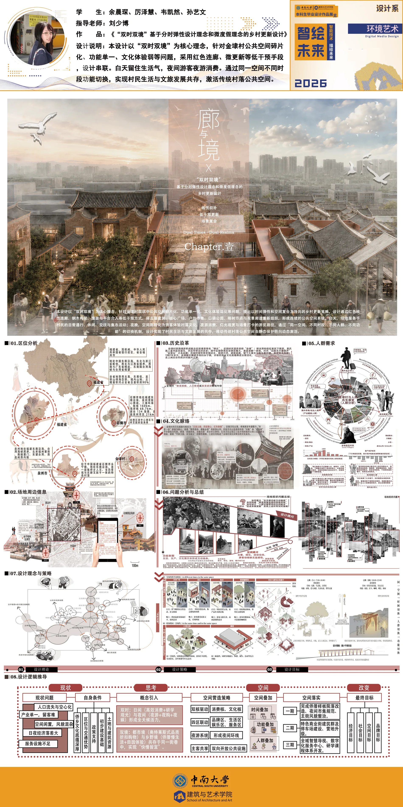
当传统村落进入新的使用语境，遗产是否可以不只是“被观看”的对象，而重新成为“被使用”的生活空间？设计以连廊为结构语言，在低干预与可逆性的基础上重新组织村落公共空间。
RESEARCH & PROBLEM / 从问题到概念
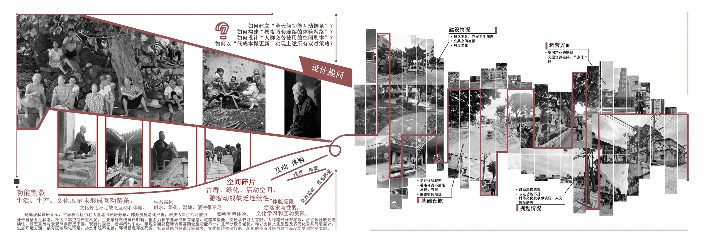
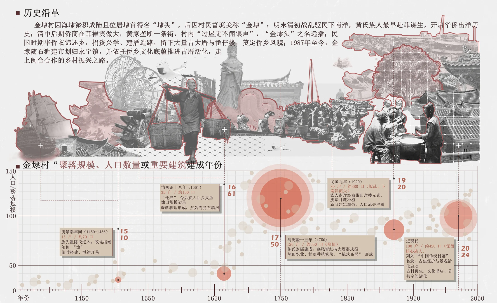
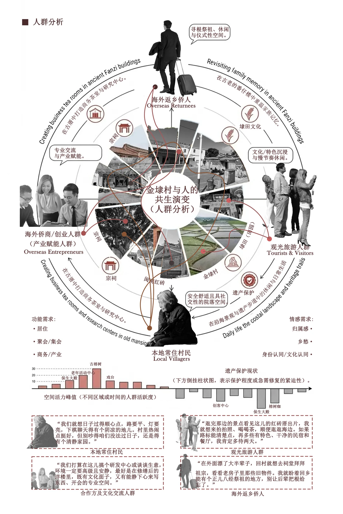
“前埕—巷道—院落”的原有连续关系被打断，空间成为彼此独立的片段。
传统轴线难以承载当代多元、交织的使用需求。
生活外迁与静态保护，使可以进入、停留和交往的日常场景逐渐离场。
DESIGN SYSTEM / 连廊 × 双时双境
空间重叠，节奏分离。
通行、休闲、社交、农贸与公共生活
展演、消费、文化感知与社交停留
我将连廊从交通构件转化为空间组织语言：它连接建筑、院落、景观与公共节点，并承担路径、视线、停留与场景转换。目标不是增加一座新建筑，而是用轻量、连续、可辨认的结构恢复场地公共性。
DESIGN OUTCOME & REFLECTION / 设计呈现与思考
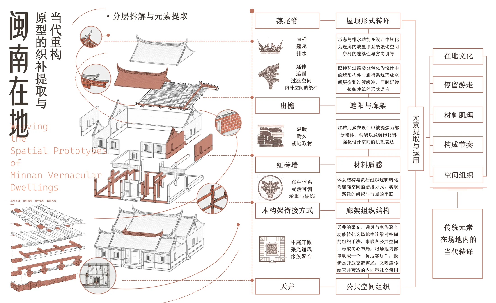
红色连廊把入口、广场、市集、戏台、榕树与观景平台重新串联，使建筑、院落、景观和公共节点从碎片转为连续的空间序列。
结构从红砖肌理、坡屋顶、木构架、出檐与格栅中提取线性、重复与节奏，并以低干预、可逆的方式介入历史环境。
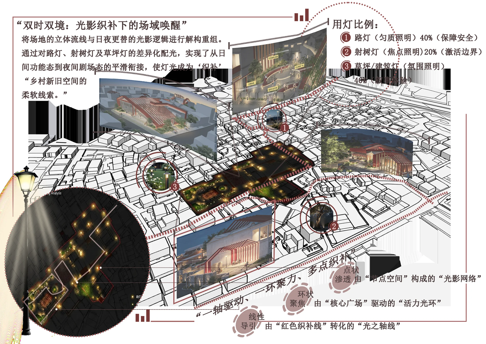
植物从路径生成阶段便与连廊共同设计：乔木提供遮荫与停留，灌木和花境柔化边界，乡土植物延续村落的自然气息。
材料与照明沿结构协同展开，以红色钢木骨架、浅色墙体、玻璃屋面和连续光轴组织行进、观看、休憩与昼夜转换。
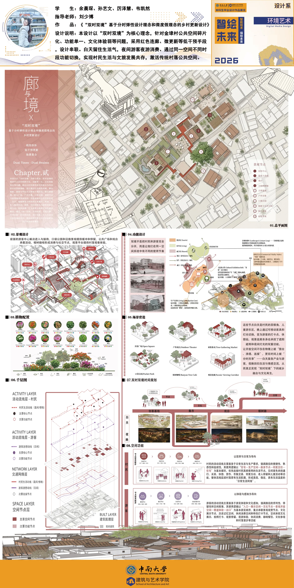
村民路径强调日常效率与熟悉感，游客路径侧重游览、体验与叙事感知；两类人群共享部分空间，却通过尺度、功能和时间保持各自节奏。
这次设计让我意识到，我真正关注的不是空间最终“长什么样”，而是人如何进入、行动与停留，以及空间如何随时间和使用者持续变化。
从塑造空间，到设计体验。
AI × CODE × CREATION / 数字能力与学习
// idea → describe → generate → experience
const exploration = {
scene: "Blender / real-time",
image: "AI generation + selection",
prototype: "AI-assisted coding"
};
test(exploration);
debug(); iterate("with judgement");我正在尝试通过 AI、代码辅助工具与三维软件拓展空间构建方式：从定义问题、描述功能与交互，到生成、测试和修正原型。这个网站本身也是一次实验。
STATIC ATMOSPHERE TO MOTION / 静态氛围图的动态转化尝试
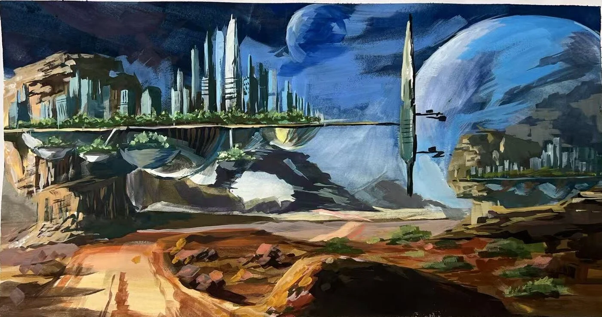
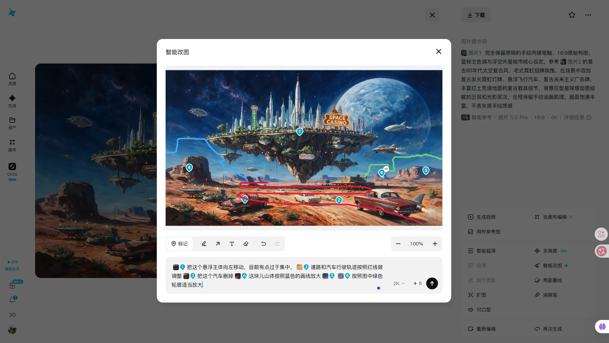
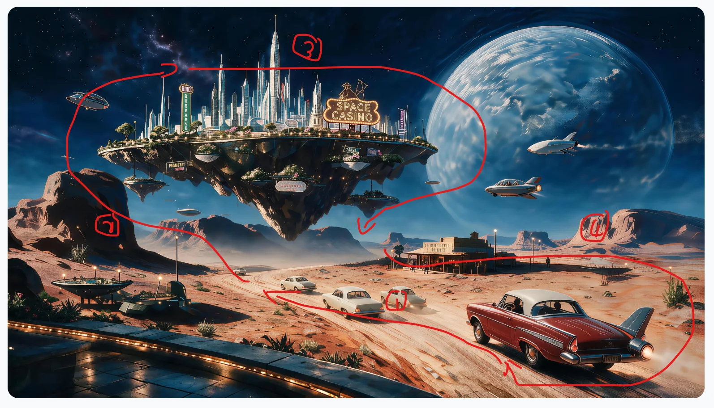
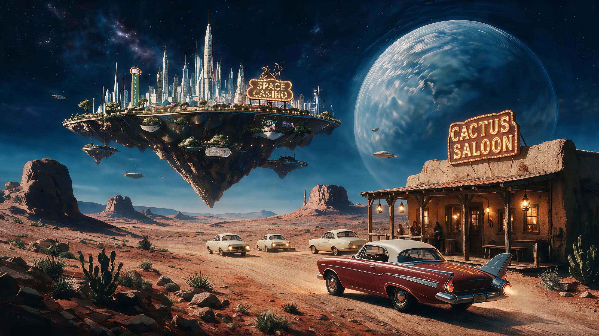
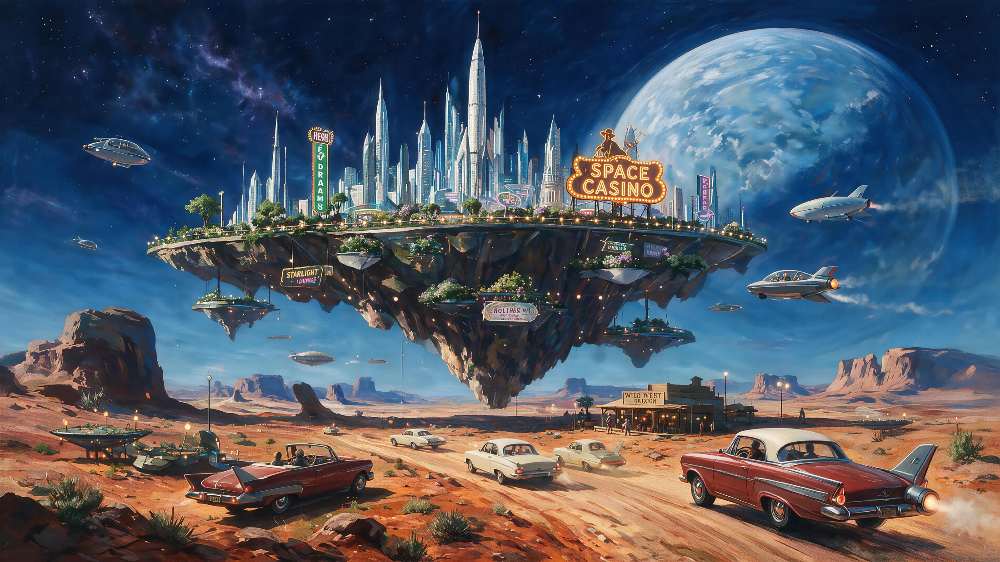
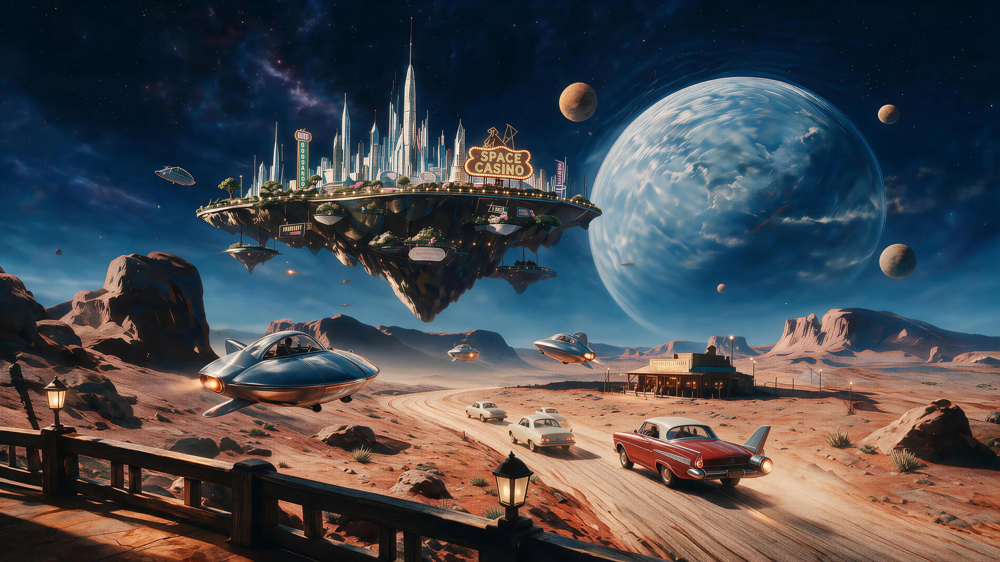
我把 AI 当作视觉探索工具，而不是最终答案。它能够快速展开可能性，但选择、判断、叙事关系与视觉控制仍然需要由设计者完成。
拖动磁带放入电视机插槽，播放从静态氛围图延伸出的动态场景。
DRAG TAPE INTO SLOT · 点击磁带也可播放
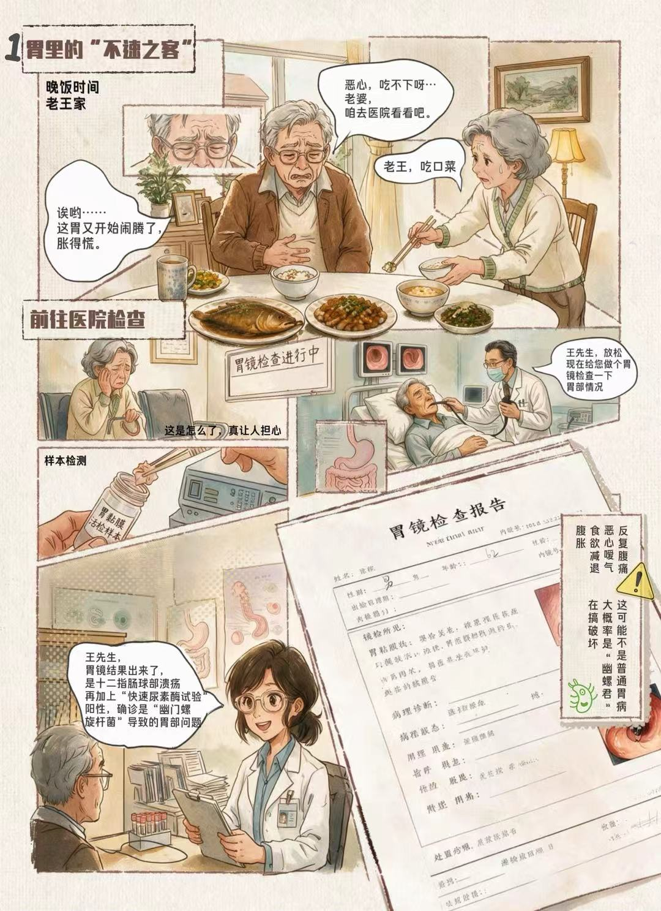
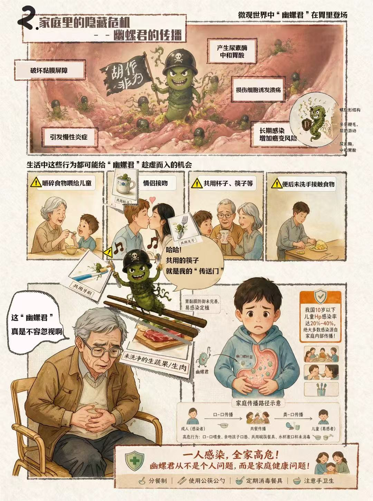
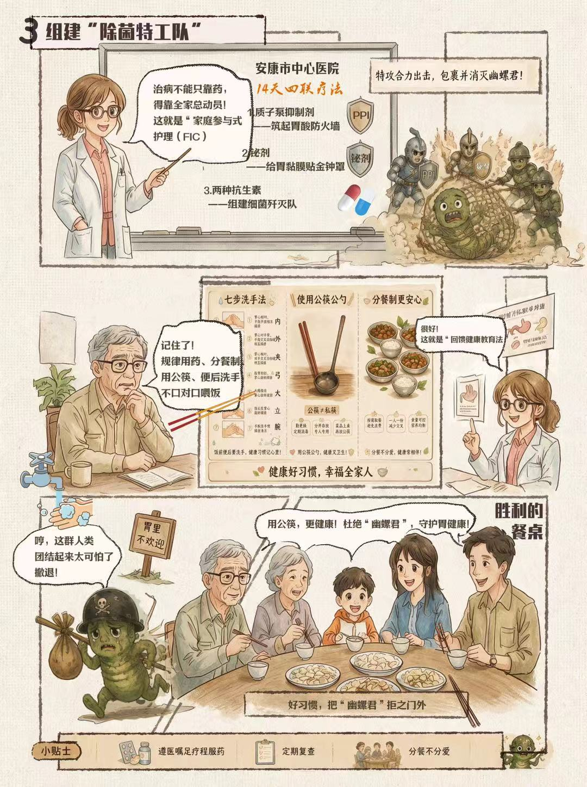
READING & RESEARCH INTEREST / 阅读、思考与研究方向
关注虚实融合演绎世界、梦境幻境题材与探索解密式情节。
思考展演空间在数字语境下的智能升级与虚拟场景建构。
观察跨时空叙事、数字舞台与文化遗产转译如何服务情感体验。
作者主权 → 参与式叙事
完成时 → 进行时
观照 → 体验
PERSONAL DEVELOPMENT INQUIRY & ANSWERS
从环境设计、空间叙事，到数字艺术、虚拟制片与 AI。
这十个问题不是为了得到标准答案，而是在记录我如何一步步确认：
我为什么走到这里，以及我想继续往哪里走。
我最早对空间产生兴趣，其实来自悬疑电影和剧集。很多推动故事发展的关键不会直接写在台词里，而是隐藏在场景、道具、光线与氛围之中。
高中接触影视美术之后，我开始从“喜欢一个打动人的画面”，转向好奇：这样的场景究竟是怎样被构建出来的？
大学虽然学习的是环境设计，但我始终试图把空间设计向自己真正感兴趣的方向靠近。后来我逐渐意识到，只要空间里有人活动，就会产生事件；事件不断发生，又会给空间叠加记忆和情感。
我真正没有改变的兴趣是：空间如何具备讲故事的能力？
数字技术的发展进一步扩大了这个问题：当空间不再只存在于现实中，虚拟与现实中的“人—空间关系”又会如何变化？
至少应该存在人的情感与行为痕迹。
一把没有被收回的椅子、一扇没有关闭的门、一个被反复使用留下痕迹的角落，都可能让人产生一个问题：
“这里发生过什么？”
空间叙事并不一定意味着直接告诉观众一个完整故事。创作者可以通过空间、物件、光线、声音和行为痕迹留下线索，让观众主动感知、推断与补全。
空间不是故事的装饰，它可以成为故事的证据。
影视通常已经建立相对完整的叙事骨架；游戏与沉浸式展演则可以只规定部分规则，让参与者通过行动获得不同体验。
我并不认为两者存在绝对的高低，它们更像是在选择：
也可以理解为观众与作品之间距离的远与近。
创作者不会消失，只是从“控制最终结果”逐渐转向“设计什么可以发生”。
AI降低的是“会做”的门槛，而不是“做好”的门槛。
手绘、软件操作和空间构建能力仍然重要，因为这些能力构成了创作者理解形式、结构、光影与空间关系的基础。
而随着生成能力越来越普及，更重要的可能逐渐变成：
当 AI 作品大量出现以后，我反而认为作品中的“人类质感”会因为创作者和观看者之间真实的共鸣而变得更加珍贵。
虚拟空间与现实空间的交互。
真正吸引我的并不是单独某一个软件或设备，而是一个存在于电脑中的空间，最终如何进入真实拍摄现场，与演员、摄影机、灯光和实体布景共同构成最终画面。
我希望理解并参与：虚拟世界最终怎样真正“发生”。
如果只是不断增加投影、大屏、声音与传感器，最终让观众最先意识到“这个技术很酷”，那么对我而言，它更接近技术体验。
真正的沉浸需要让人的身体进入作品：移动、寻找、停留，并在行动中经历内容。
空间在沉浸式展演中，可以承担“时间”的作用。
电影依靠剪辑决定先看到什么、后看到什么；沉浸空间则可以通过路径、遮挡、距离、开合、转折和停留重新安排事件的体验顺序。
我最终希望观众带走的不是一种技术，而是一段只属于自己的情感体验。
技术应该服务于表达与情感。
当技术可以帮助观众更靠近作品，它有存在的必要。如果不断增加数字技术反而让体验者从情绪中抽离，那么技术就应该被削弱。
哪怕最终留下来的只是一件真实物件、一道光或一段声音，只要它是最能打动人的部分，就值得留下。
技术不需要证明自己的存在。
我更希望观众先进入世界，最后才后知后觉地发现：“原来这里的技术这么厉害。”
沉浸式展演、虚拟制片和 AI 辅助创作，表面上是三个方向，但现在看来，它们共同指向两个问题：
01 / 技术如何改变人和空间之间的关系？
02 / 我为什么一直喜欢“过程创造”？
我喜欢作品从想法产生、经历变化，再逐渐形成结果的过程。
真正吸引我的可能不是一个固定技术，而是跨越虚拟与现实的场景生成过程。
我不希望首先被记住的是：“她使用了很多先进技术。”
我更希望自己能够把控好技术的使用，让人首先自然地进入目标环境、目标世界与被塑造的时间。
先感受到世界，再后知后觉地意识到技术很牛。
职业上，我目前更希望走向一个能够理解并参与完整创作流程的位置：
更偏向一个能够连接不同环节，同时参与创作判断与整体统筹的人。
如果十年以后 AI、虚拟制片、实时渲染与沉浸交互都已经成为普通的创作基础设施，那么抛开所有技术以后——
我究竟想成为一个怎样的创作者？
这个空白暂时保留。
留给之后的学习、创作与经历慢慢回答。
NEXT / 未来计划与联系方式
what’s next
IMMERSIVE SPACE · VIRTUAL SCENE
AI-ASSISTED NARRATIVE CREATION